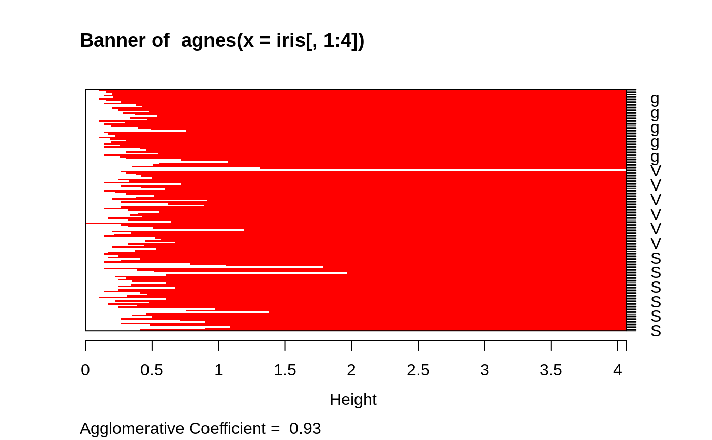

plot.agnes.RdCreates plots for visualizing an agnes object.
# S3 method for agnes plot(x, ask = FALSE, which.plots = NULL, main = NULL, sub = paste("Agglomerative Coefficient = ",round(x$ac, digits = 2)), adj = 0, nmax.lab = 35, max.strlen = 5, xax.pretty = TRUE, ...)
| x | an object of class |
|---|---|
| ask | logical; if true and |
| which.plots | integer vector or NULL (default), the latter
producing both plots. Otherwise, |
| main, sub | main and sub title for the plot, with convenient
defaults. See documentation for these arguments in |
| adj | for label adjustment in |
| nmax.lab | integer indicating the number of labels which is considered too large for single-name labelling the banner plot. |
| max.strlen | positive integer giving the length to which strings are truncated in banner plot labeling. |
| xax.pretty | logical or integer indicating if
|
| ... | graphical parameters (see |
Appropriate plots are produced on the current graphics device. This can
be one or both of the following choices:
Banner
Clustering tree
When ask = TRUE, rather than producing each plot sequentially,
plot.agnes displays a menu listing all the plots that can be produced.
If the menu is not desired but a pause between plots is still wanted
one must set par(ask= TRUE) before invoking the plot command.
The banner displays the hierarchy of clusters, and is equivalent to a tree.
See Rousseeuw (1986) or chapter 5 of Kaufman and Rousseeuw (1990).
The banner plots distances at which observations and clusters are merged.
The observations are listed in the order found by the agnes algorithm,
and the numbers in the height vector are represented as bars
between the observations.
The leaves of the clustering tree are the original observations. Two branches come together at the distance between the two clusters being merged.
For more customization of the plots, rather call
bannerplot and pltree(), i.e., its method
pltree.twins, respectively.
directly with
corresponding arguments, e.g., xlab or ylab.
In the banner plot, observation labels are only printed when the
number of observations is limited less than nmax.lab (35, by
default), for readability. Moreover, observation labels are truncated
to maximally max.strlen (5) characters.
For the dendrogram, more flexibility than via pltree() is
provided by dg <- as.dendrogram(x) and
plotting dg via plot.dendrogram.
Kaufman, L. and Rousseeuw, P.J. (1990) Finding Groups in Data: An Introduction to Cluster Analysis. Wiley, New York.
Rousseeuw, P.J. (1986). A visual display for hierarchical classification, in Data Analysis and Informatics 4; edited by E. Diday, Y. Escoufier, L. Lebart, J. Pages, Y. Schektman, and R. Tomassone. North-Holland, Amsterdam, 743--748.
Struyf, A., Hubert, M. and Rousseeuw, P.J. (1997) Integrating Robust Clustering Techniques in S-PLUS, Computational Statistics and Data Analysis, 26, 17--37.
agnes and agnes.object;
bannerplot, pltree.twins,
and par.
## Can also pass 'labels' to pltree() and bannerplot(): data(iris) cS <- as.character(Sp <- iris$Species) cS[Sp == "setosa"] <- "S" cS[Sp == "versicolor"] <- "V" cS[Sp == "virginica"] <- "g" ai <- agnes(iris[, 1:4]) plot(ai, labels = cS, nmax = 150)# bannerplot labels are mess